docusign > product design intern
an 8-week long project bringing ai to the forefront of document preparation, from initial discovery to content generation.
role-team
- product design intern
- atb-create team
- iris ai for document templates
skills
- figma
- v0
- figma prototype
- confluence/jira
time
- jun-sept 2026
status
- shipped/launched
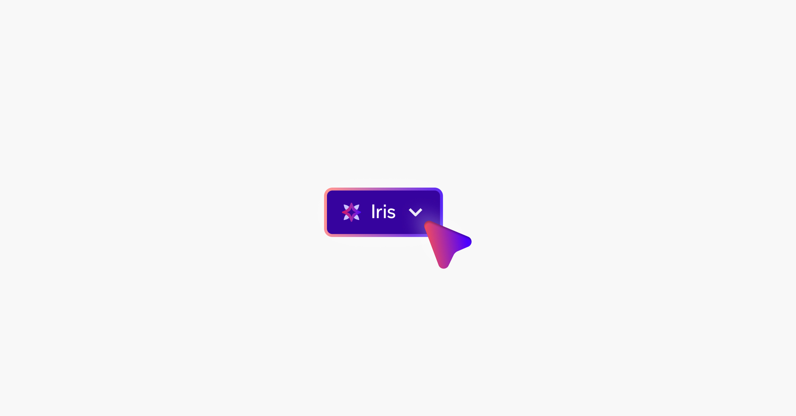
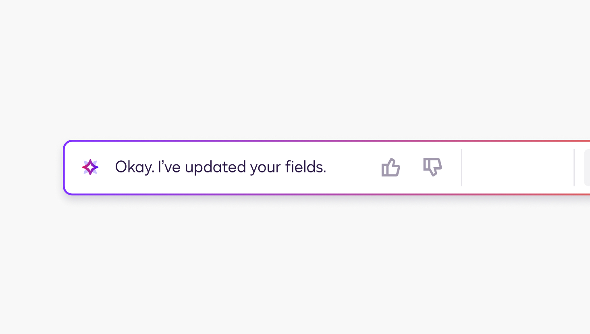
overview: working on document templates in IAM
in short, i worked with docusign’s document templates team to lay ground-work concepts for their ai doc-based editor.
within 8 weeks of my internship, i shipped 10+ ai features exclusive to document templates as one of docusign’s main q3 projects.
final deliverables
my product features were designed to improve ai discoverability and utility in a new space. i observed high-volume areas, such as document sourcing and tracking changes, to see where ai could actually be useful.
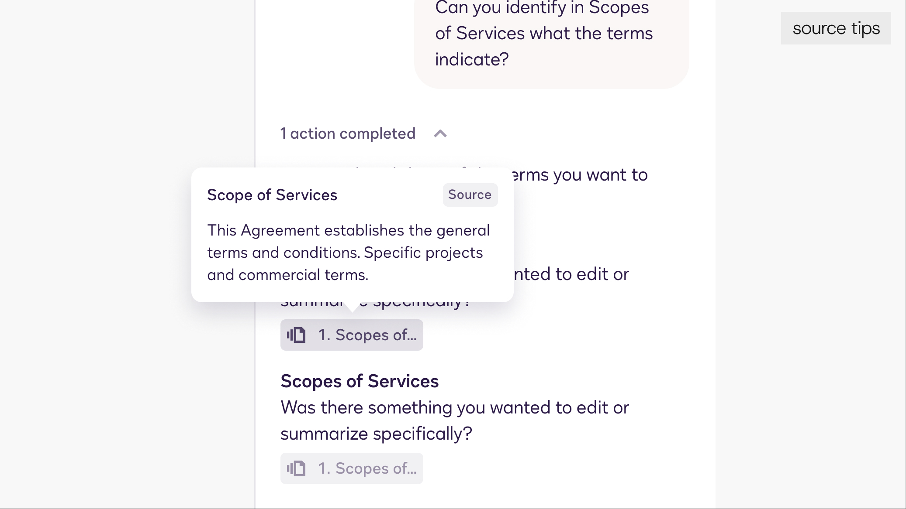
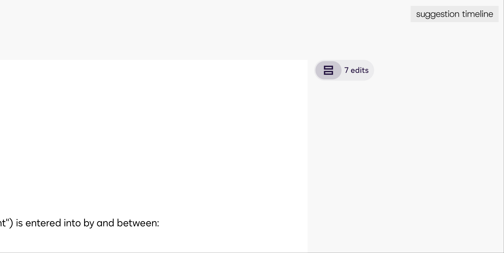
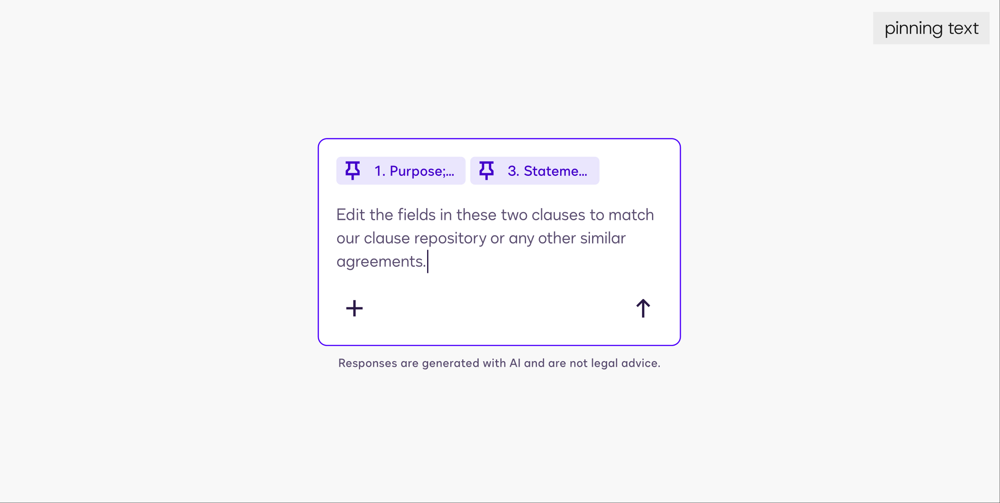
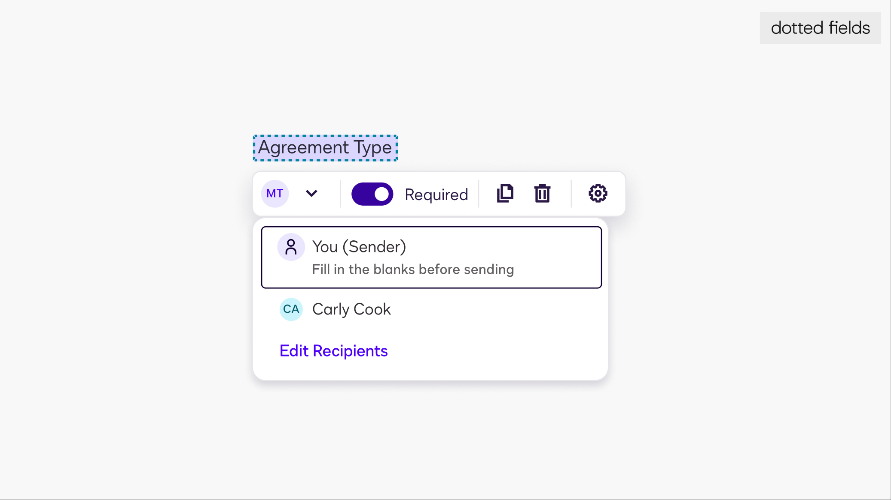
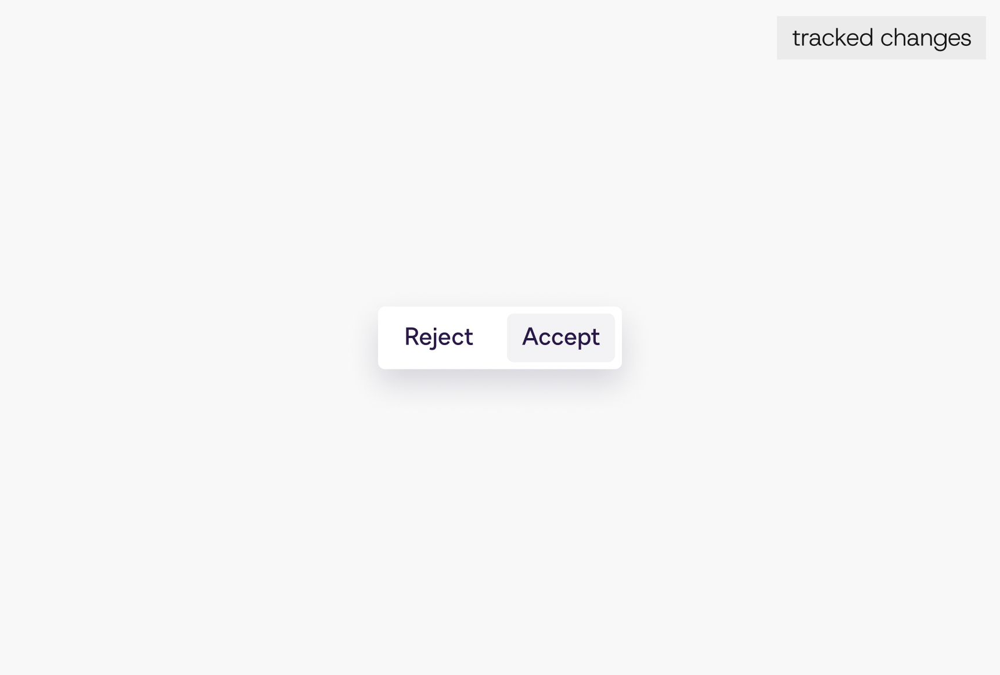
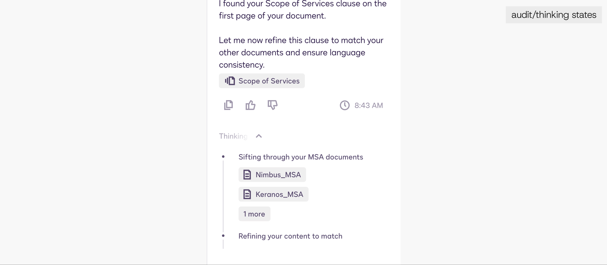
problem: how do we invite current users into a new ai workflow?
docusign users, right now, edit their contracts on microsoft word. docusign is just another signing and contract management platform to them.
so, how do we introduce a ton of editing-first features?
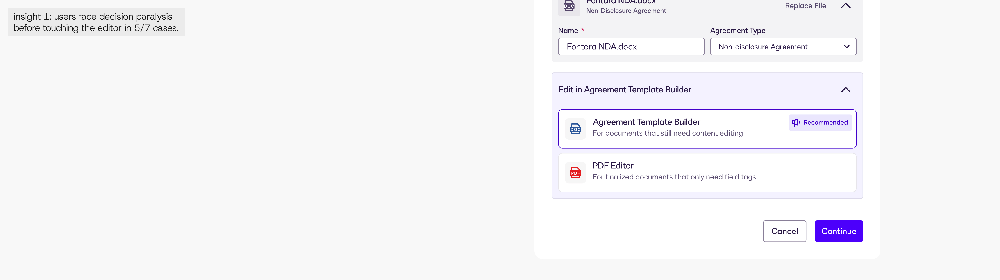
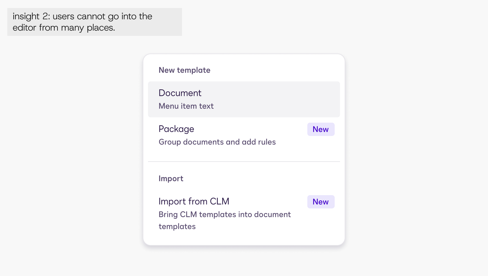
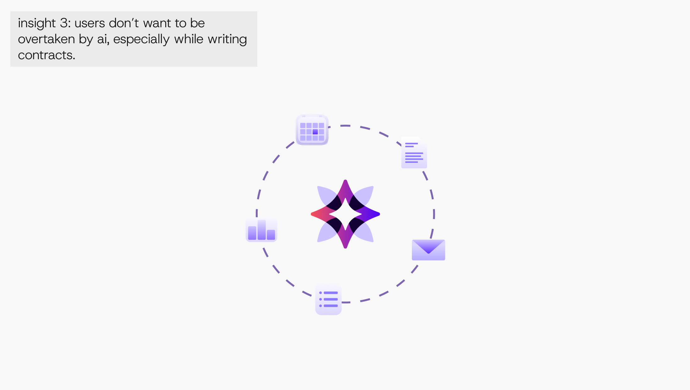
solution 1: “entry points galore”
insights from sales and hr teams - doc template users - revealed they prefer to reuse past contracts to make new documents (ex. MSAs, lease documents, offer letters).
i observed docusign’s agreement library to find “touchpoints”; places where users could turn agreements into templates. then, i began adding drop-downs and buttons for guidance.
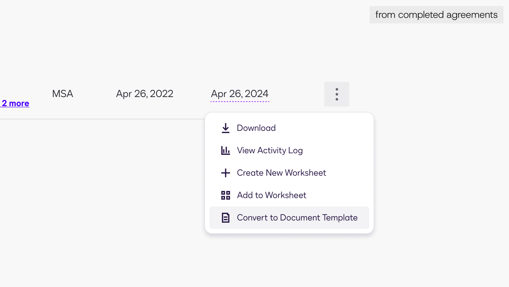
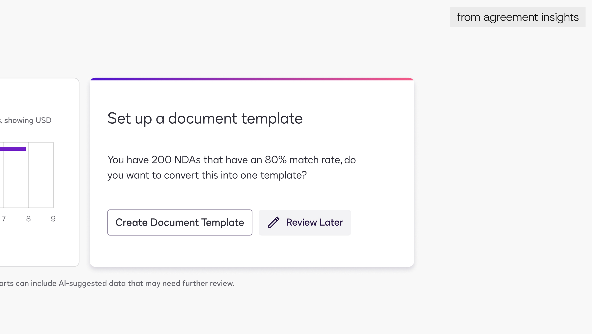
solution 2: “simplifying how ai enters and exits”
after studying 8 test users, i learned that making them turn ai on themselves didn’t work -- i had to introduce ai seamlessly, but also make it non-intrusive.
i emphasized human input and states for alternating and closing chat views.
this way, users could control their canvas while still having ai accessible at all times.
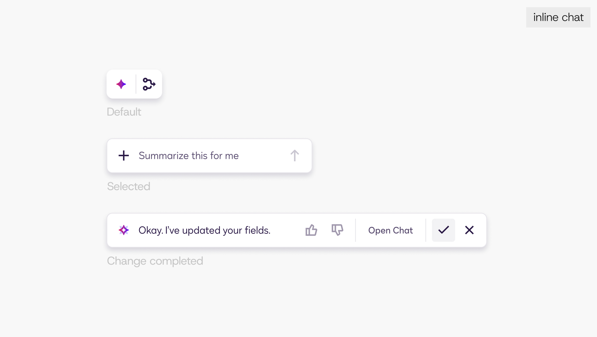
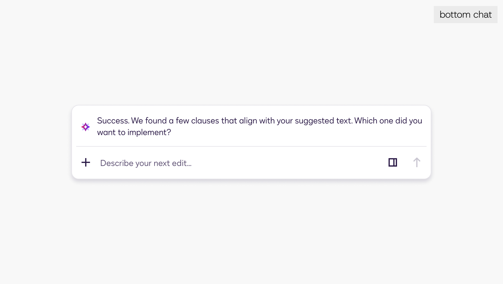
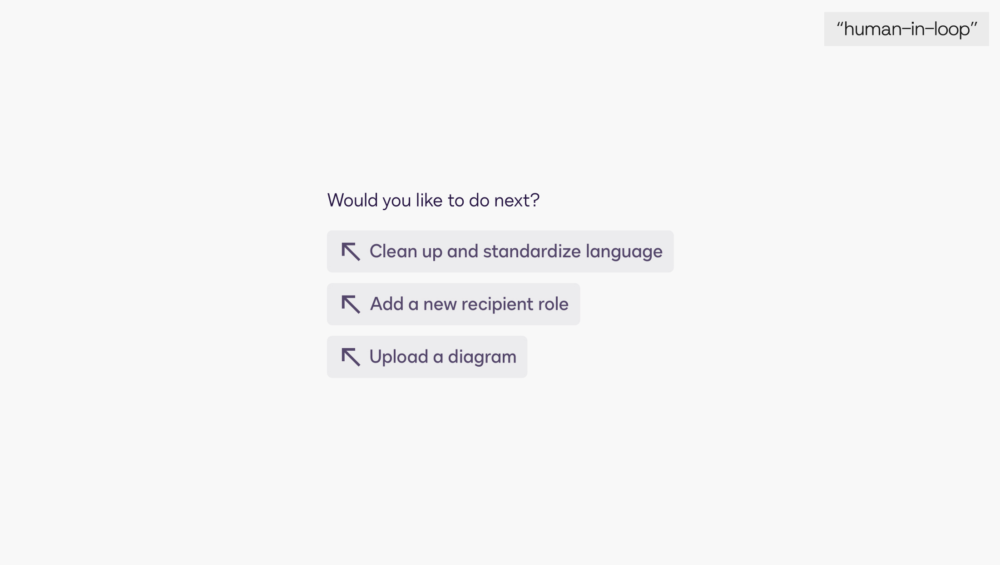
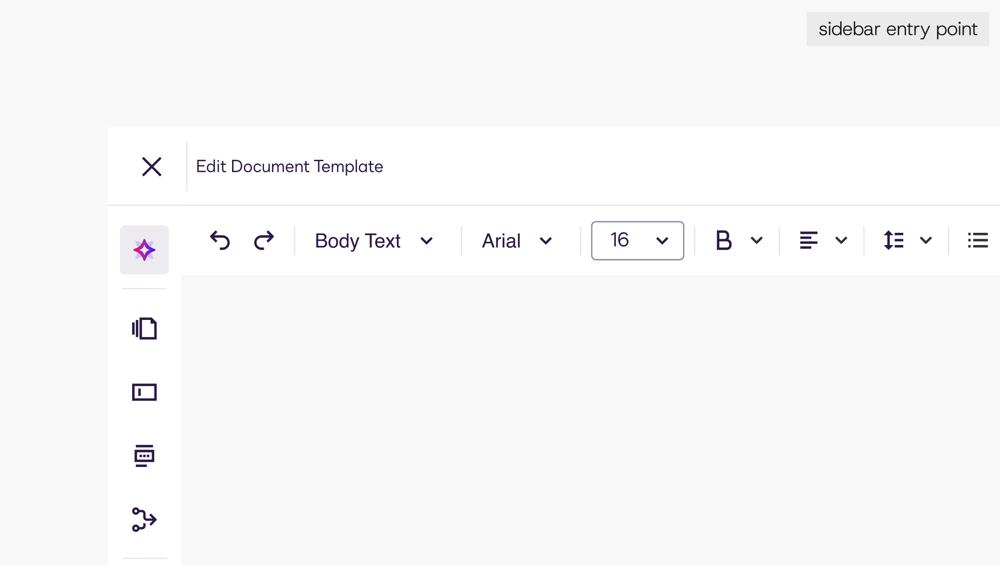
challenges: “finding time to respond to others and facilitate my own work”
as the sole design intern, i was attending to cross-functional partners, catching members up to speed, and making updates to screens i wasn’t in charge of.
however, this taught me how to remain creative under pressure.
there are always going to be external factors at play and favors asked. but, how that is managed and overcome exemplifies a driven designer.
final flows
after intensely putting together a few story arcs, i prototyped 4+ flows to hand-off to developers for the next phase. ai in document templates is now shipped and usable!
value points and takeaways
- working within constraints is difficult -- but never impossible. learning to work within confinement shows a skilled designer at work.
- oversharing is good, give your team options to work with. but, never go all in on one idea because you don’t know what other people may think.
- think about if a user will actually adopt your feature. bring design back to realism and don’t sweat the extra tinkering just yet.
looking for finer details?
i don’t post everything about my projects, so let me know if you’re eager to know more!
let’s talk!